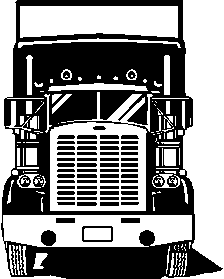

Badgerland F-100s Meeting Minutes
The May meeting was hosted by Dave Strand and John Bradley. Due to inclement weather the meeting was moved indoors to the home of John Bradley. Thanks for opening your house for us. There were 14 members & Jake in attendance and 2 trucks.
The meeting was called to order by President Mike Sonn at 1:30 PM.
Officers Present - Mike Sonn, President
Mark Favor,V. President
Todd Showers, Treasurer
Cindy Favor, Secretary
Bob Kulinski, Newsletter Editor
Treasurer's Report - Todd Shower's reported that the club has in the account.
Membership Report - no new members this month.
Newsletter Editor - Bob reported that he is up & ready to start sending the newsletter via e-mail to those members who have contacted Bob. An Hewlett-Packard PC, 17" monitor and software with Microsoft Word was purchased(after rebates) for a net cost of $824.28. This included some rebates that he received. So far he has gotten 26 e-mail addresses from members, vendors, and clubs. He will start sending them this month. He will also use bcc for addresses to keep the addresses more private.
Jeff Burnett has donated almost a case of paper for the regular printing of the newsletter. Bob K. will check with printer to see if useable and applicable discount. Thanks Jeff!!
Old Business –
Dave Kerznar has recently undergone quadruple by-pass surgery. We wish him a speedy recovery.
Dash 11
Flyers
- Mike Connor reported that he had some flyers made up. He gave 300 to Greg Master's to distribute and 150 handed out at Jefferson. He also mailed 300 and will take some to Pigeon Forge, Tenn.Shirts - Randy Martin was not at the meeting to make a report.
Hotel - Make your reservations now before all the good rooms have been reserved. Make sure you request to be in the Badgerland area if you wish to be in the back "cove" area. Copa Cabana management has stated we can reserve specific rooms if we know which one we want. (See lay-out of room locations located elsewhere in this newsletter). Call the Copa Cabana at 800-364-2672 and be sure to mention the Badgerland F-100s show, September 15th-16th.
Food - Nothing new to report at this time.
Dash - con’t.
Mark Leonhard checked into purchasing a new Nesco. He is unable to get a good deal at this time. We will wait until we know for sure how many we will need for the show before purchasing one at this time.
Volunteers - Mike reported that we still need someone to head up the van. Please contact Mike if you are interested in this. Otherwise things are looking pretty good. Mike will make a Volunteer spread sheet which will be in the newsletter. Please look it over and sign up for anything you will be able to help with.
Kid's Games - nothing to report at this time.
It was brought up that since we are not having a model contest that we could up the budget for kid's games. A motion was made by Mike Connor and seconded by Floyd Johnson to up the kid's games budget from $75.00 to $100.00. The motion passed unopposed.
Friday Cruise - If anyone is interested in planning a cruise for Friday please let Mike Connor know.
Dash Plaques - Dash plaques would run $1.25 a piece and $ 1.00 for thank-you's. A motion was made by Mark Favor and seconded by Bob Kulinski to have 150 dash plaques made up. Motion carried unopposed. They will check on number for thank-you's before making that decision.
Club Shirts - Mike Connor brought a catalogue he received from Dave Farmer. Badgerland shirts were discussed and will be brought up again at another meeting.
It was brought to the attention of Todd Shower's that more than $100.00 was spent with the consent of the President, but not by vote of the club members. $400.00 was spent for printing, supplies and postage for flyers and beg letters for the show. They needed to be printed before the meeting so they could be taken to area shows. Mike Connor and Todd Showers would like to apologize for this oversight. A discussion was held by the members present and a suggestion was made to amend the By-Laws.
The current By-Law states(Article IV, Section H): President shall be authorized to approve expenditures not to exceed $100.00 for special expenditures, without the vote of the membership. The proposed amendment would read: Any show expense over $100.00 must be approved by the President and the majority of the club officers prior to payment. Motion was made by Todd Showers and seconded by Jeff Burnett to accept the amendment. Motion carried. A second vote will be taken at the next meeting.
The Treasurer mentioned this will be the last newsletter sent to members who haven’t paid their Club dues for 2000. Also Todd would like to update the Advertiser's annual fee. Please contact Todd Showers if you have any information on this.
New Business -
We received a thank-you from Second Harvest Food Bank. We donated 62 lbs. of food and $10.00. Thanks to everyone who contributed.
Mike Connor brought information on the Hot Rod Power Club. It offers clubs guides, coupons, rebates, etc. Mike Sonn will have the information if anyone is interested.
The next meeting will be June 24th at Randy and Diane Roelke's.
Motion to close meeting was made by Dale Barrette and seconded by Rita Johnson. The meeting adjourned at 2:50 PM.
Submitted by Cindy Favor, Secretary
Upcoming Meetings –
June 24th –
Randy & Diane Roelke, Loganville, WIJuly 23rd – Bob & Linda Kulinski, Waukesha, WI
August 19th - Jeff Burnett in Caledonia, WI
July Meeting
This meeting is being held at the site of the Wisconsin Super ‘60s Ford Club show, Soerens Ford in Brookfield, WI. I’ve included a registration form if you wish to enter your truck in the show. The folks of the Super ‘60s Club will reserve a spot for us to park our trucks and hold our meeting. If you want to register before the show, please forward your registration to address shown on the form. If you plan to attend the July 23 meeting, whether it’s held at Soerens Ford or at the Kulinski home, please let me know by July 10th . I’d like to know how many folks will be coming and if you’ll be driving your Effie.
The show is free to the public and you can park your truck or vehicle outside of the show grounds for free if you wish. Food and pop is available as well as toilet facilities. A DJ spins records and has prizes for trivia questions answered correctly. It’s a lot of fun, so plan on attending.
If the weather is inclement on meeting day, we’ll hold the meeting at the Kulinski house in Waukesha.
DO THE DUES
Are you current with your 2000 Club dues? Well, I hope you are, ‘cuz if you ain’t, this is the last newsletter for ya partner. If you can’t remember if you paid your fair share to the Club, just check the label on this newsletter to see if there’s a PD3/01 above your name.
If there is, you’re all set. If not, send in your $20 today to:
Todd Showers
W315 N885 Hwy. #83
Delafield, WI 53018
If you’ve sent in your dues and PD3/01 isn’t shown, give Todd Showers a call to update your membership status. Call Todd at 262-646-7454.

Thanks for readin’ this note and keep on truckin’.
Progressive Cruise
– A progressive cruise is being planned for the August 19th meeting. The August meeting will be held in Caledonia, WI a couple of miles from Seven Mile fair in Racine County. It is thought the cruise would start in the Madison area and head East. Road selection hasn’t been determined yet. Two of the last stops will be at Todd Showers’ in Delafield and at Bob Kulinski’s in Waukesha. Give Dale Barrette a call to let him know that you want to participate in the cruise and or be a stop on the route. Dale can be reached at 608-827-5421.
E-MAIL ADDRESSES
Starting with the May issue, I’ll be sending the newsletter via e-mail to those members who have supplied me with an email address. Don’t miss out on the color photos in future issues especially the issue after the Dash.
Issues of importance -
Issues of newsletters, that is.Please keep the following issues handy for your future use:
November ‘99 - listing of Club members with addresses and telephone numbers. (Member issues only).
January ’00 - contains Club’s By-laws.
Upcoming shows and swap meets for 2000
June 4 Waukesha Olde Car Club Show at Waukesha County Fairground, Waukesha, WI
Contact Lyle at (262) 483-3189
June 9-11 Midwest F-100 Nationals at Winona, MN. Call Larry @ (612) 472-4109 or Dave @ (612)
943-1469 for more information.
June 9-11 Good Guys at Indianapolis, IN
June 23-24 Great Plains Show in Nebraska
July 2-3 5th Annual Custom & Hot Rod Show at the Milwaukee Mile during the Sears Motorsports Weekend, hosted by Boondockers Car Club. See Craftsman Trucks on Sat. and BGN Series racing on Sun. For info. call 920-261-9880.
July 2 Ducktona 500 Car Show, Sheboygan Falls River Park, Sheboygan Falls, WI. For info.
call (920) 467-2812
July 23 Wisc. Super ‘60s Ford Club Show and Swap meet at Soerens Ford in Brookfield, WI. Same day as meeting sponsored by Bob and Linda Kulinski of Waukesha.
August 6 Madison Classics Show and Swap meet at Walworth County Fairgrounds in Elkhorn,
WI
Sept. 15-17 Dash to the Dells XI held at Lake Delton, WI
Host motel is the Copa Cabana. Call for reservations 1-800-364-2672
Sept. 23 & 24 Madison Classics Show and Swap meet at Jefferson County Fairgrounds in Jefferson,
WI
Contact Bob Kulinski for advertising Classified Ads at (262) 542-6823 or 1722 Mohawk Lane, Waukesha 53186 or E-mail at ford54@execpc.com or fax with cover page addressed to me @ (262) 524-4376 Ads will be listed for only four months in a row, unless extended by request.
CLASSIFIED ADS
Trucks For Sale
* ’81 F350 400 eng., 4 spd. tranny with PT0 winch Floyd Johnson 608-483-2594 $3000 2/00
* ’56 F250 6 cyl., 4 spd., 60k miles. Body needs a lot of work, tail gate is like new. Been in storage for
24 years. Ken Becker 2885 295th St. Hopkinton, IA or 319-926-2081
2/00* ’55 F100 302 V8, C4 tranny, PS, PB, PW, tilt wheel, chopped top, yellow with gray interior
$10,500 Greg Schneider 309-394-2659
2/00* '53 F-100, 302 w/ C6 tranny, brand new interior, '72 Nova clip WFD brakes, new MP master cyl., American Wiring System, Vintage Air Heat/Defrost, Stewart Warner gauges, Aiwa stereo CD player w/Sony speakers, new glass, exhaust system by Midas, Oak bed & running boards. Painted in Corvette yellow with tan interior. Runs and drives great.
Asking $15,900 John Lunn 608-868-6227
3/00* ’69 F100, Styleside, 390 eng. (from 1975 vehicle), 3 spd. tranny, new radiator, rear air shocks, dual
exhaust. Bed in excellent condition, cab has 20% rust (floor). Fenders and doors starting to rust.
Have an extra hood. Split shaft needs to be replaced.
Paul Strehlow 262-654-1181
4/00* ‘51 F2 pickup Partial restoration. Needs minor carb work 47K original miles Flathead six 4 spd
new running boards, interior panels and paint $5500 OBO can be driven
call 608-277-1212 days, 608-835-1555 eves 5/00
Parts for Sale
The following is offered by Dave Strand 608-562-3277 2/00
* 1953 F-100 cab shell w/doors, front and rear fenders, box, hood, grill $500
* Edelbrock 350 intake manifold w/3 2 Bbl. Holley carbs for 390 eng. $300
Wanted
* One set of ram horn exhaust manifolds. Will follow-up on leads given.
Bob Ward 6642 Radburn Lane Greendale, WI 53129 or telephone weekday mornings or all
day on weekends at 414-423-0069
2/00* Looking for a clean floor pan for ’61 unibody box. Any ideas???
Call Tim Joseph at 618-669-2674
4/00* Will trade a C-5 for, or buy, a transmission for 1984 F-150, 300 6 cyl. eng.
Paul Strehlow 262-654-1181
4/00* Drivers door ’56 F-series, ’55 F-100 window glass, ’55 F-100 front fenders
Floyd Johnson 608-483-2594 or
fjohnson@mwt.net 5/00* ’73 – ’75 F100 Ranger XLT long bed
Jerome Hofhenke 15860 228th Ave. Elk River, MN 55330